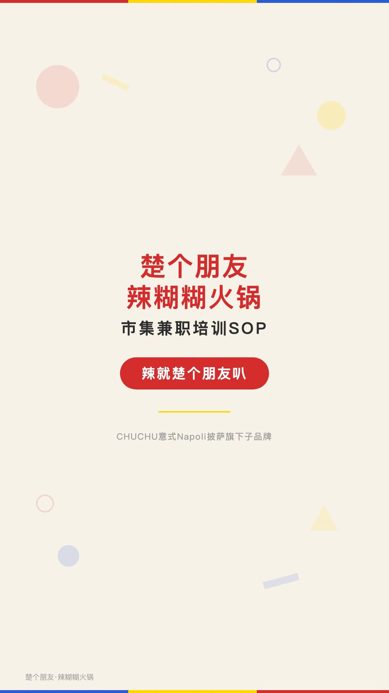
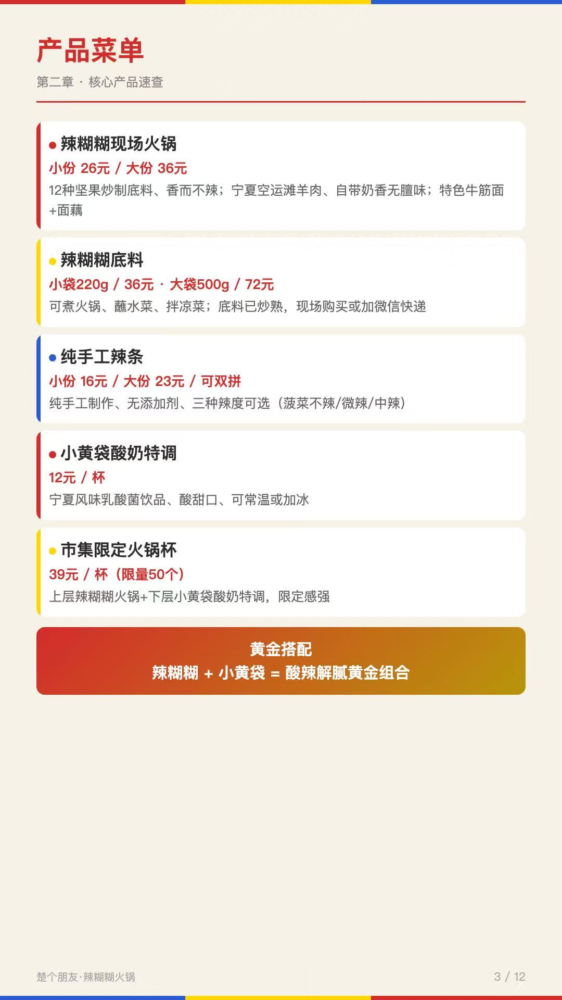
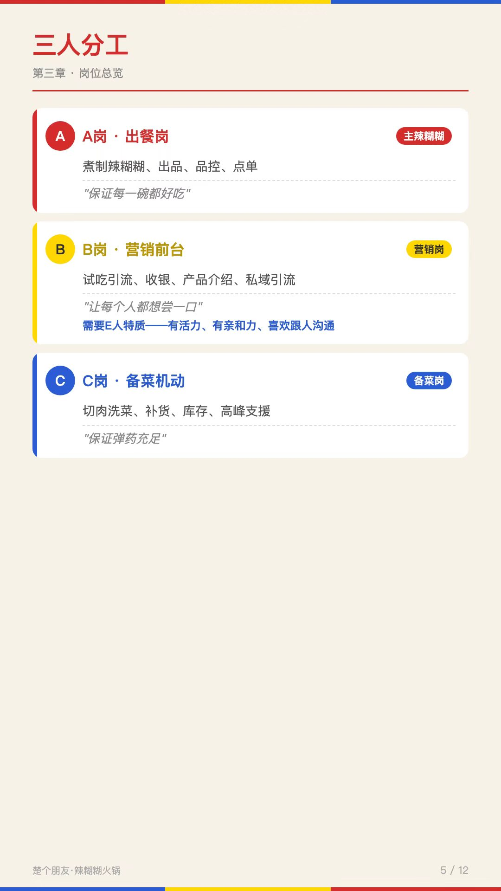
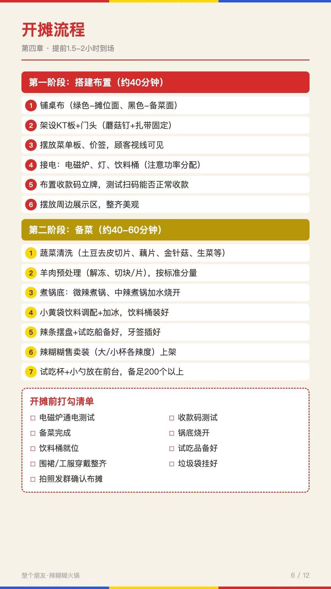
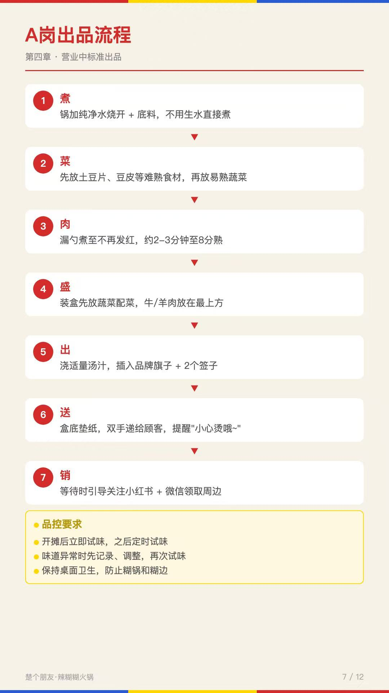
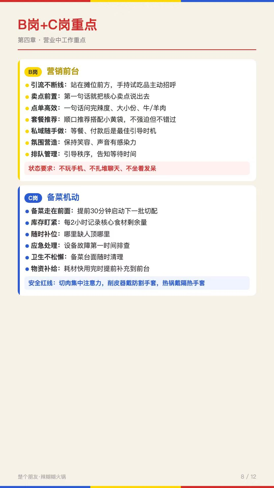
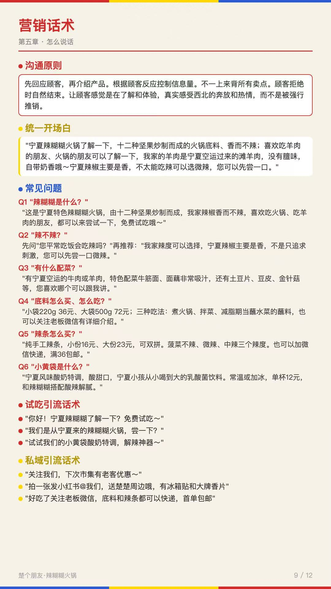
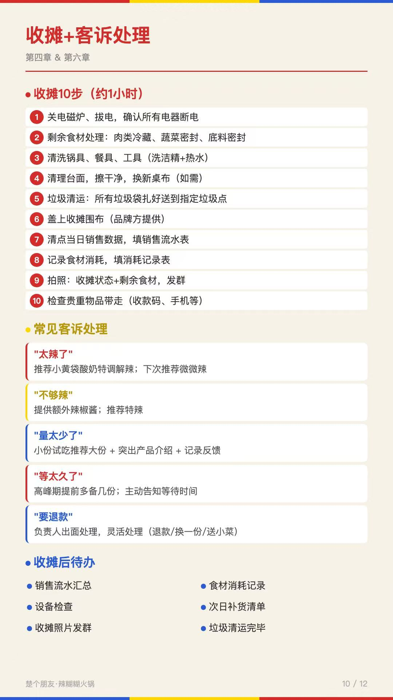
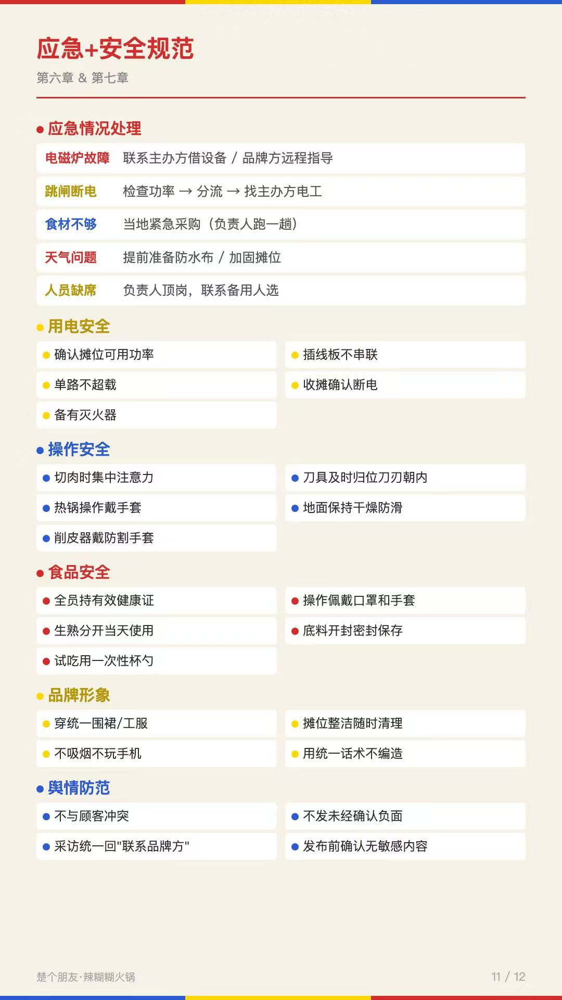
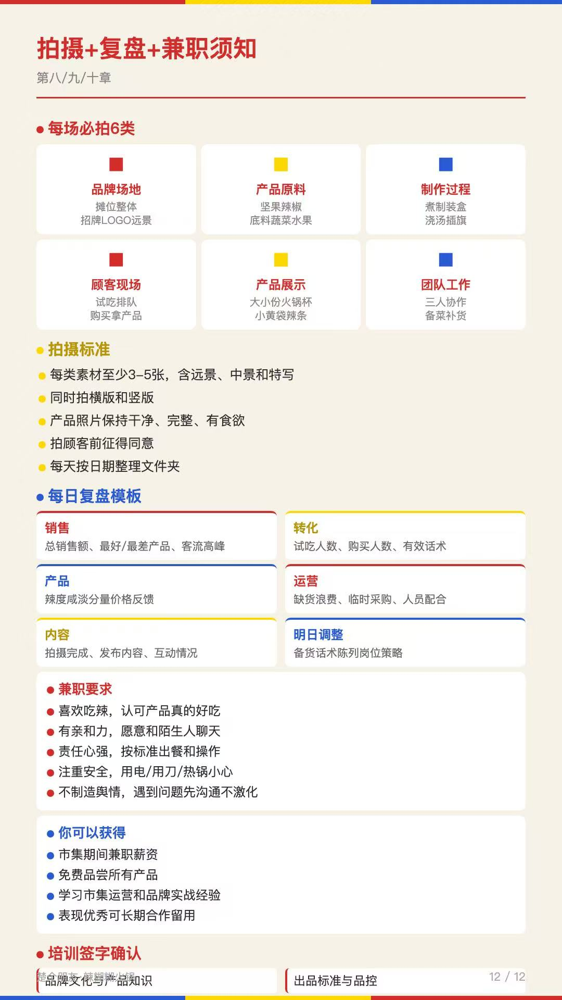

这份 SOP 解决什么问题
让临时加入的兼职人员快速理解品牌、产品和岗位要求，在开摊前、营业中和收摊后按统一标准执行。
以“楚个朋友·辣糊糊火锅”市集兼职培训材料为例，将品牌认知、岗位分工、出品流程、营销话术、客诉处理与安全规范整理成一套可执行的现场手册。
让临时加入的兼职人员快速理解品牌、产品和岗位要求，在开摊前、营业中和收摊后按统一标准执行。
信息结构化、流程拆解、角色分工、异常预案、顾客沟通与现场复盘。











